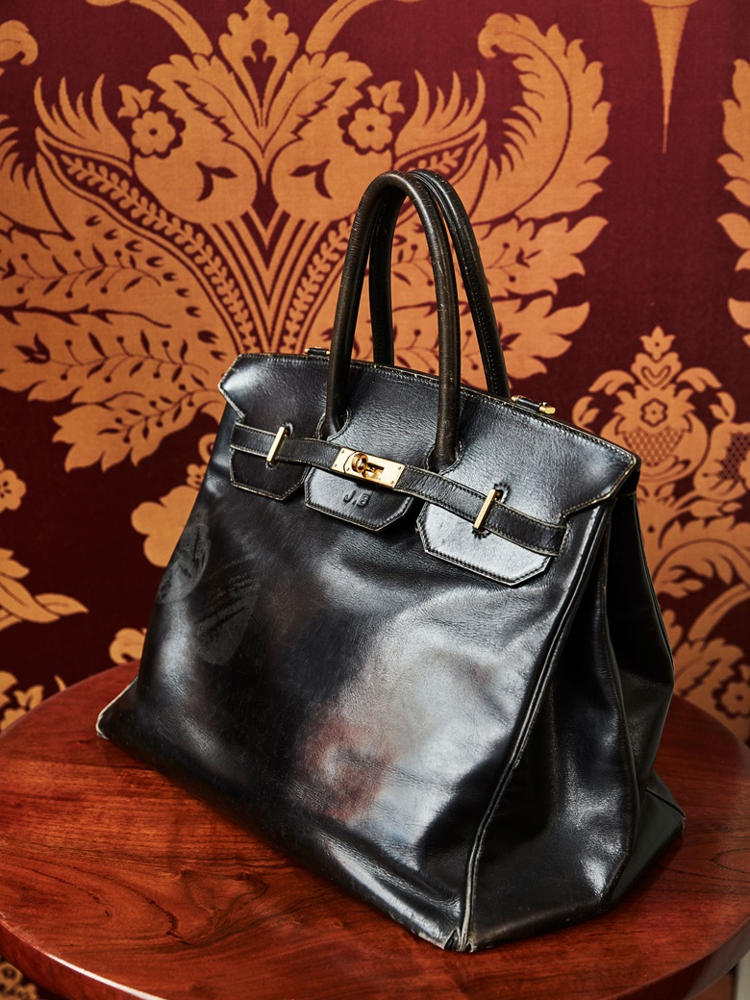

The Hermès Birkin bag is an icon in the fashion world, highly sought-after by celebrities and the handbag-obsessed. The Hermès bag’s design is a collaboration between Jane Birkin and Hermès CEO Jean-Louis Dumas. The two met on a flight from Paris to London in 1984. Birkin confided in Dumas that she lacked a purse with appropriate functionality for her fast-paced lifestyle. Out of this conversation, the Birkin 40 in chic calfbox leather was born. The Birkin’s practical design featuring two rolled handles, a flap top, clou “feet,” and a lock closure continues to resonate today.

The Birkin remains a coveted Hermès handbag thanks to its signature Hermès craftsmanship and exclusivity. This Hermès bag takes expert artisans a minimum of 18 hours to create and is marked with a code that identifies its year of creation, the workshop it was crafted in, and the artisan who made it. To buy a Birkin directly from Hermès, customers must have a purchase history with the brand. Hermès only allows boutiques to purchase a select number of Birkins on a bi-annual basis and the style of Birkin delivered to boutiques is rarely known ahead of time. As a result, customers must either make do with available Birkin bags or patiently wait for the style they want to become available. An Hermès Birkin is a fantastic investment piece whose classic beauty withstands the test of time. Birkins range in price from about $10,000 for a basic leather bag to over $200,000 for a crocodile and diamond style. The bags are among the more searched for Hermès bags.